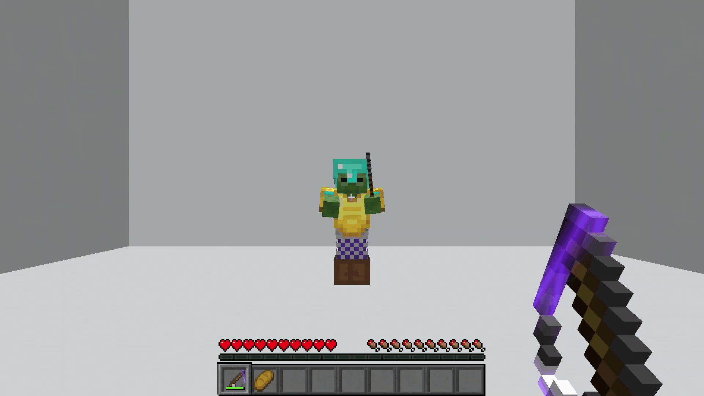
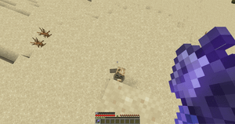

Comandos relacionados con github
En esta parte vas a poder encontrar todos los comandos relazionados a github con una explaciacion de que hace y para q sirven. (Los comandos basicos de git fueron explicados en la seccion de git)
-
Git clone
Este comando sirve para clonar/copiar un repositorio de github. Es decir, despues de usa este comando se va a crear una carpeta con el nombre del repositorio que se este queriendo copiar en tu computadora, y va a tener dicho codigo tambien. En terminos minecrafteanos seria el equivalente de copiar un mundo de minecraft porque te gusto y/o queres cambiarle algo.
La estructura de este comando es es la siguiente git clone "" entre comillas se ubicaria la url del repositorio que se quiera copiar -
git remote add origin
Este comando tine un objetivo bastante similar al git clone. Solo que este en vez de traer un repositorio que ya existe te permite vincularte con un repositorio tuyo y subir tu codigo. Para que se entinda de forma mas sencilla, vos tenes tu mundo de Minecraft y con este comando lo podes subir a un server para que otras personas lo puedan ver, copiar, modicar o lo que vos les permitas o no hacer con tu mundo.
La estructura de este comando es asigit remote add originentre comillas tambien debe ir la url aca ya que se necesita vincular con el repositorio. -
Git pull
Este comando lo que permite hacer es actualizar tu version del codigo. En otras palabras si el dia de mañana el codigo que clonaste se actualiza y queres tener los cambios deberias usar este comando para poder obtenerlos. Pensandolo en minecraft es como si ese mismo mundo que copiaste porque, por ejemplo, tenia un castillo re bueno al dia siguiente le agregan una ciudad y queres tener esa ciudad en tu version tambien.
este comando tiene la estructura degit pully no hace falta poner nada mas ya que al momento de clonarlo ya se vincula de forma automatica tu version local con la remota
-
Git push
Este comando seria el inverso del git pull es decir que en vez de traer cambios, sirve para subir cambios. Basicamnete lo que permite hacer es actualizar el repositorio remoto con los cambios que hicieras en el local. Volviendo a la analogia de minecraft, vos cambiaste el castillo para que en vez de tener una apariencia similar a las de los castillos persas se vea mas a la de un castillo teuton y ahora queres subir ese cambio
Este comando se tiene la sintaxis de git push y tampoco necesita nada mas
-
Git fetch
Este comando en realidad es muy similar al git pull con la diferencia de que este no remplaza automaticamente tu version. Es decir te deja ver los cambios y ya despues uno pude tomar los cambios o no. Hablando en minecraft lo que uno esta haciendo es ver el mundo actualizado por un lado mientras todavia tieene el propio por el otro. Permitiendo asi compararlos antes de decidir.
Este comando se realiza con git fetch y al igual que el pull no necesita url debido a que ya se vinculo previamente -
Pull request
Mas que un comando esto es una aclaracion. Uno va a poder subir y traer cambios siempre y cuando la persona dueña del repositorio lo permita, de otra forma en vez de realizarse de forma automatica se va a estar pidiendo permiso al dueño y ya luego de que decida se realziara o no el debido pull, push o nada acorde a la peticion y lo que decidia. En caso de ser un repositorio propio siemrpe uno va a poder realizar cambios. En terminologia minecrafteana si el servidor es privado se pide permiso al dueño para poder tener una copia o cambiar algo (a menos que sea tuyo).